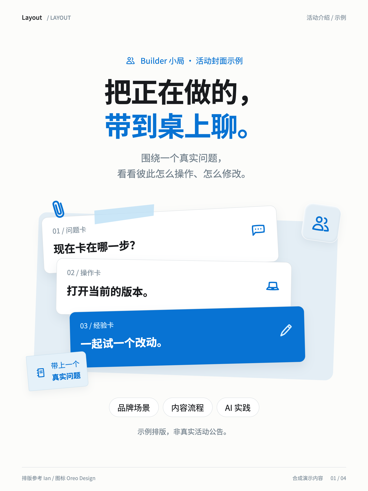
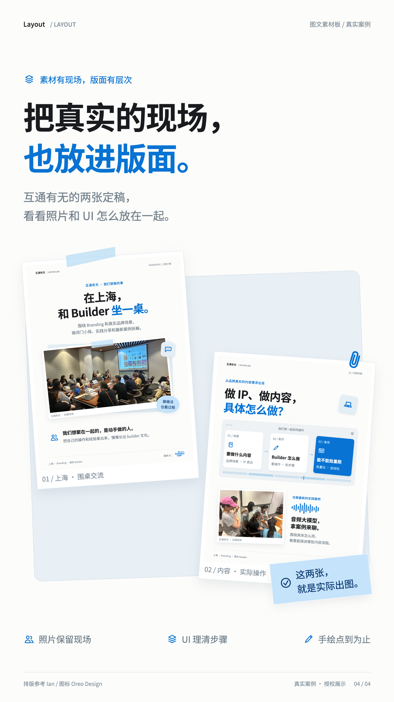

能复用的，是这些细节。
标题的位置、按语意断行、字号、间距、手绘图标和 UI 层次，都放进 Skill 里。轮播和横版 deck 使用不同构图；确认的原文保留原样。
一个开源的排版 Skill。蓝白黑、思源黑体，配一点手绘 icon、纸片和轻阴影。
把原话和素材带来，版面按内容重新排。
调用 $layout；旧命令 $xhs-card 仍可用。


同一内容换画布，标题、组件与留白也跟着换。
标题的位置、按语意断行、字号、间距、手绘图标和 UI 层次，都放进 Skill 里。轮播和横版 deck 使用不同构图；确认的原文保留原样。
排版参考 Ian，手绘图标来自 Oreo Design / Nicole Tang。感谢两位原作者先把好东西做出来。
模板和导出脚本的源代码在 GitHub，Keynote 式指排版形式，当前案例交付 HTML/CSS 与 PNG。